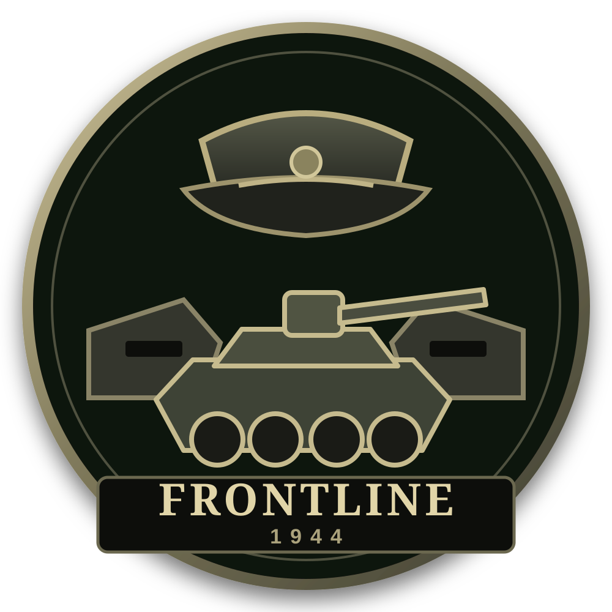

ESTRATEGIA NARRATIVA HISTÓRICA · TIERRA
La guerra llega a tu mesa de mando.
Recibe informes, coordina a tu Estado Mayor, administra recursos militares y toma decisiones dentro de campañas reconstruidas capítulo a capítulo.
HISTORIA DOCUMENTADA
INFORMACIÓN IMPERFECTA
DECISIONES CON CONSECUENCIAS